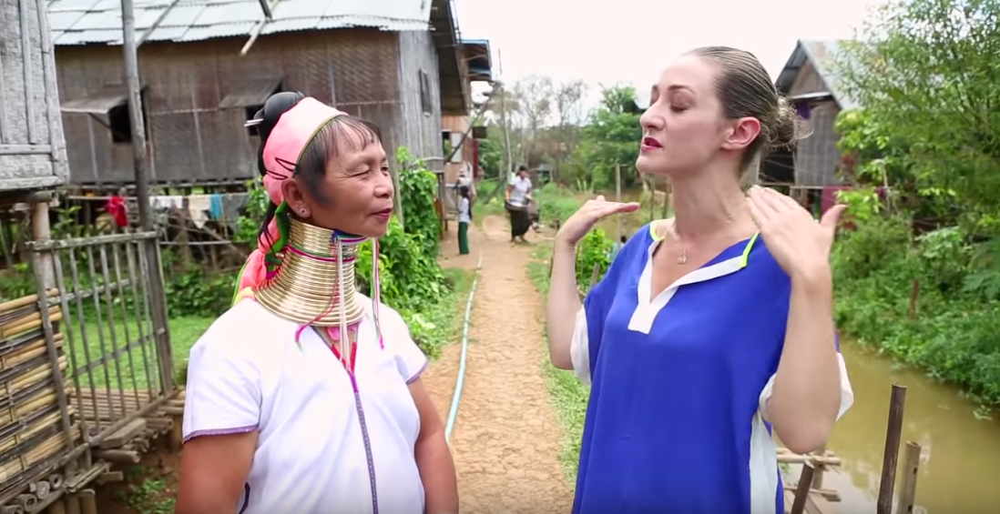
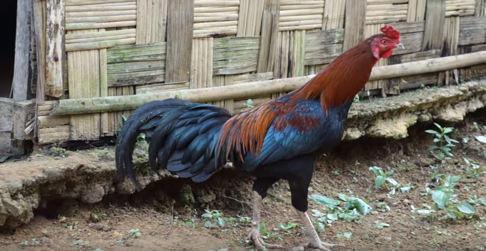
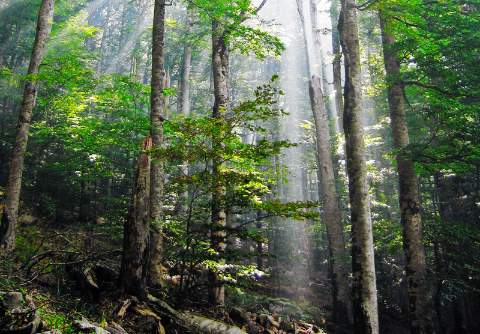

งานกะคว้าง

คำว่า “กะคว้าง” แปลว่า เสา ซึ่งเป็นเสาศักดิ์สิทธิ์ที่นับถือของหมู่บ้าน เป็นที่รวมวิญญาณภูตผีต่าง ๆ
โดยงานจะจัดในช่วงมีนาคมถึงเมษายนของทุกปี โดยในวันแรกต้องไปตัดไม้ในป่า โดยเป็นไม้สักที่แข็งแรงทนทาน
และนำไปให้หมอผีเป็นผู้ทำพิธี โดยหมอผีนี้เรียกว่า “กะคว้าง บเว จะ” วันที่สองจะขัดเกลาลำต้นให้กลม
และวันที่สามจะเป็นวันปักเสาฌซ่นไหว้เฉลิมฉลอง และเมื่อเสร็จพิธีกรรมบริเวณที่ตังเสาแล้ว ชาวบ้านและแขกจากหมู่บ้านอื่น
จะได้รับการเชิญชวนไปกินข้าว เหล้าขาวตามบ้านต่าง ๆแต่ละบ้าน
พิธีทำขวัญและเรียกขวัญ

เมื่อเด็กอายุ 1 เดือนจะมีการทำขวัญโดยใช้พ่อไก่และแม่หมู เอาเลือดไก่และหัวใจหมูมาทาตรงจมูกและดั้งคิ้ว ติดขนไก่ระหว่างคิ้ว เอาด้ายผูกข้อมือเด็ก
หากเด็กไม่สบาย คนเฒ่าคนแก่จะทำนายเพื่อหาว่าขวัญเด็กไปอยู่ที่ไหน แล้วจึงนำไก่ไปจุด ๆ ที่ขวัญเด็กอยู่ ขุดหลุมแล้วเฝ้าจนกว่าจะมีแมลงตกลงไปแล้วจึงเก็บกลับมาเปรียบเสมือนว่าขวัญนั้นกลับบ้าน เมื่อขวัญกลับมาแล้วก็ปล่อยไป และไก่ที่มาทำพีจะฆ่าหรือกินเมื่อไหร่ก็ได้ แต่ต้องกินในบ้านเท่านั้น
หากเด็กไม่สบาย คนเฒ่าคนแก่จะทำนายเพื่อหาว่าขวัญเด็กไปอยู่ที่ไหน แล้วจึงนำไก่ไปจุด ๆ ที่ขวัญเด็กอยู่ ขุดหลุมแล้วเฝ้าจนกว่าจะมีแมลงตกลงไปแล้วจึงเก็บกลับมาเปรียบเสมือนว่าขวัญนั้นกลับบ้าน เมื่อขวัญกลับมาแล้วก็ปล่อยไป และไก่ที่มาทำพีจะฆ่าหรือกินเมื่อไหร่ก็ได้ แต่ต้องกินในบ้านเท่านั้น
งานศพ

เมื่อมีคนตายจะทำความสะอาดศพ แต่งศพด้วยผ้าใหม่ วางศพไว้บนเตียงหรือที่สูงกว่า ห่มผ้า
จุดเทียนตลอดไม่ให้ดับเพื่อให้ดวงวิญญาณอื่น ๆ คุ้มครองให้ศพอยู่ในลักษณะดีไม่ส่งกลิ่น
และมีการเตรียมโลงที่ทำจากไม้ทั้งท่อน โดยระหว่าตั้งศพไว้ที่บ้าน จะมีญาติและแขกที่มางานศพผลัดกันเต้นรอบศพ
ในจังหวะที่ช้า เพื่อให้วิญญาณไปสู่สุขคติ หลังจากที่กินเวลางาน 2-4 วันแล้ว จึงนำศพไปไว้ที่สุสาน
งานผีเลี้ยงน้ำ งานผีเลี้ยงภูเขา

ชาวกะยันให้ความสำคัญกับผีน้ำที่เรียกว่า “บูซื่อบูก่าง” แปลตรงตัวว่าเซ่นไหวน้ำ เซ่นไหว้ดิน
จึงมีการเลี้ยงผีน้ำที่เป็นผู้พิทักษ์แหล่งกำเนิดน้ำเหล่านี้ โดยจัดในช่วงมีนาคมถึงพฤษภาคมของทุกปีของฤดูฝน
ส่วนในเดือนพฤศจิกายน ฤดูหนาวจะจัดพิธีเลี้ยงผีภูเขาเรียกว่า “เค้า บเว จะ” เพื่อขอให้ได้ข้าวที่เจริญงอกงาม พืชไร่อุดมสมบูรณ์ ให้ชาวบ้านมีสุขภาพที่ดี
ส่วนในเดือนพฤศจิกายน ฤดูหนาวจะจัดพิธีเลี้ยงผีภูเขาเรียกว่า “เค้า บเว จะ” เพื่อขอให้ได้ข้าวที่เจริญงอกงาม พืชไร่อุดมสมบูรณ์ ให้ชาวบ้านมีสุขภาพที่ดี